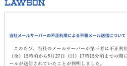

ITmedia NEWS 最新記事一覧
https://www.itmedia.co.jp/news/
ITがもたらす変化を敏感に感じ取り、仕事や生活に生かしていこうという企業内個人やネットサービス開発者、ベンチャー経営者をコアターゲットに、IT業界動向やネットサービストレンド、ネット上の話題までカバーするニュースを配信します。
フィード
再び浮上した「クレカ表現規制問題」 クリスタやpixiv FANBOXの騒動からマンガ家が感じた不安と焦り 2
2
ITmedia NEWS 最新記事一覧
9月下旬にボクたちイラストやマンガを生業とする人間にとって、不安になってしまう出来事が立て続けにありました。
34分前

Amazon、データセンター批判に反論 10億ドル超の地域支援策も発表 3
ITmedia NEWS 最新記事一覧
AWSのマット・ガーマンCEOは、データセンター建設批判に反論する声明を出した。水資源枯渇などの懸念を「迷信”と否定しつつ、電力料金負担や自治体とのNDA撤廃を含む行動指針を発表。さらに地域支援として、資格取得や省エネ改修などを助成する10億ドル超の基金を立ち上げる。
14時間前

貧乏な子どもが“稼げる大人”になる条件とは？ 米ハーバード大などがFacebook7000万アカウント超から分析 2022年にNature掲載 28
ITmedia NEWS 最新記事一覧
米ハーバード大学や米スタンフォード大学などに所属する研究者らが2022年にNature誌で発表した論文「Social capital I: measurement and associations with economic mobility」は、どんな人とのつながりが、将来の収入アップに影響するのかを分析した研究報告だ。
20時間前

「アバハウス」全顧客の情報漏えいか 会員・受注DBに不正アクセス 「不審な返金メール届いた」報告で判明 91
ITmedia NEWS 最新記事一覧
複数の顧客から「注文情報と一致する不審な返金案内メールを受信した」との問い合わせが寄せられ、同社が調査を始めて判明した。
21時間前

Meta、AIエージェント「Muse」とつながる自作ガジェット向けSDKをオープンソースで公開 「Raspberry Pi」などに対応 3
ITmedia NEWS 最新記事一覧
Metaは、パーソナルAI「Muse」と連携するガジェットを自作できるプロジェクト「Muse Gadgets」を発表した。ESP32やRaspberry Pi向けSDKをGitHubでオープンソース公開。自作機器や家電と連携させる専用デバイス「Muse Home Link」も米国の有料会員向けに無償提供する。
21時間前

Apple、macOSの「フルディスクアクセス」に追加の制御を導入へ 「AIエージェントの進化でリスクが大幅に増大」 70
ITmedia NEWS 最新記事一覧
Appleは、macOSの「フルディスクアクセス」権限の付与手順を厳格化する方針を発表した。AIエージェントの自律化に伴うデータ流出リスクを抑えるため、明示的な操作や追加制御を導入する。背景にはMetaのAIエージェント「Muse」を巡るメッセージデータ監視の議論などがある。
1日前
ヤマト運輸、「クロネコ代金後払いサービス」への不正アクセスで続報 利用者など一部個人情報が漏えいか 2
ITmedia NEWS 最新記事一覧
ヤマト運輸は10月2日、9月29日に公表した「クロネコ代金後払いサービス」への不正アクセスについて、一部の利用者や加盟店の情報、担当社員の氏名が漏えいした可能性があると発表した。
2日前
赤沢経産相、パワー半導体事業の国内再編「後押しする」 ロームなど統合協議難航受け 2
ITmedia NEWS 最新記事一覧
赤沢亮正経済産業相は10月2日の閣議後記者会見で、自動車や人工知能（AI）、データセンターなどに欠かせないパワー半導体事業の再編を経済産業省としても後押しするとの意向を示した。
2日前

「Androidのマイナンバーカード」提供へ 20日から 物理カードなしでも本人確認など可能に 35
ITmedia NEWS 最新記事一覧
デジタル庁は10月2日、「Androidのマイナンバーカード」の提供を20日に始める予定だと発表した。既存の「Androidスマホ用電子証明書搭載サービス」を刷新するもので、Android端末でも実物のカードを提示せずに、スマートフォンで対面の本人確認や年齢確認などを受けられるようになる。
2日前
日本エネルギー経済研究所、不正アクセスの続報 パスポート情報13件の漏えい確認 1
ITmedia NEWS 最新記事一覧
日本エネルギー経済研究所は10月2日、9月に公表した不正アクセス被害について、詳細調査の結果を発表した。パスポート情報13件の漏えいを確認したほか、口座情報を含むメールアドレスも流出した可能性がある。
2日前
英字日刊紙のジャパンタイムズ、傘下が不正アクセス被害に 漏えいの有無は「調査中」 2
ITmedia NEWS 最新記事一覧
英字日刊紙「The Japan Times」を発行するジャパンタイムズ（東京都千代田区）は10月2日、グループ会社が管理するサーバの一部に不正アクセスがあったと発表した。
2日前
第一生命に不正アクセス 従業員情報12万人分漏えいか 退職者も対象 64
ITmedia NEWS 最新記事一覧
第一ライフグループと第一生命保険が、2社の使う人事システムが不正アクセスを受け、従業員情報約12万人分が漏えいした可能性があると発表した。うち7万人分は退職者の情報という。
2日前
自動運転バスを10月2日から運行 茨城・つくば市、27年度の「運転手なし走行」目指す 18
ITmedia NEWS 最新記事一覧
茨城県つくば市と筑波大、関東鉄道、KDDIなどは10月2日、つくばエクスプレスつくば駅前と筑波大構内を結ぶ路線で自動運転バスの運行を始める。当面は運転手が同乗する「レベル2」で走り、来年度には特定条件下で運転手を不要とする「レベル4」への移行を目指す。
2日前
女性のAI活用に「自信の壁」 民間団体が白書公表、専門家「挑戦してみて」 3
ITmedia NEWS 最新記事一覧
生成AI（人工知能）は女性のキャリアにどんな影響を与えているのか。民間団体「Women AI Initiative Japan（WAIJ）」が公表した「女性AI人材白書2026」からは、時間削減の実感と裏腹に、活用を阻む「自信の壁」が浮かび上がった。
2日前
パーク24株、一時4カ月ぶり安値 タイムズカー漏えいの集団訴訟に2000人超参加意向の報道
ITmedia NEWS 最新記事一覧
1日には損害賠償を求める集団訴訟の募集に対して2000人以上が参加の意思を示したとの報道があり、これを嫌気した売りが出たとみられる。
2日前
タイムズカー漏えいで集団訴訟の動き、登録3000人弱 呼び掛けた弁護士に聞いた──「謝罪で済む案件ではない」 34
ITmedia NEWS 最新記事一覧
カーシェアリングサービス「タイムズカー」の個人情報漏えいを巡り、被害者が共同で損害賠償を求める集団訴訟に向けた動きが出ている。参加者を募る牧野裕貴弁護士がITmedia NEWSの取材に応じ、立ち上げの経緯や賠償の見通しを語った。
2日前
免許悪用防止届出 JICCのアプリ受付再開も、つながりにくい状態続く 2
ITmedia NEWS 最新記事一覧
JICCがシステムメンテナンスを終え、スマホアプリによる「本人申告コメント」と「本人開示」の申し込みを順次受け付けていると発表した。
2日前
履修修正の締め切り当日にシステム障害、大阪公立大 全授業を休講する事態に 34
ITmedia NEWS 最新記事一覧
大阪公立大学は10月2日、基盤システムに大規模な障害が発生したため、全キャンパスで同日の授業を終日休講にすると発表した。履修登録や教材の閲覧に使うシステムのほか、公式アプリや教職員向けのシステムなど、学内の幅広いサービスに影響が出ている。
2日前
トレーニング効果をもたらす最少量の運動は？ 週に何秒、何回必要か 早大などが2024年に調査 3
ITmedia NEWS 最新記事一覧
国立スポーツ科学センターや早稲田大学などに所属する研究者らが学術雑誌「Medicine & Science in Sports & Exercise」で2024年に発表した論文「Physiological and Metabolic Responses to Low-Volume Sprint Interval Exercises: Influence of Sprint Duration and Repetitions」は、トレーニング効果をもたらす最少量の運動を探求した研究報告だ。
2日前
“謙虚なリーダー”は上司として優れているのか？ 東大が日本企業の400人以上を調査 3
ITmedia NEWS 最新記事一覧
東京大学先端科学技術研究センターの松尾朗子特任助教らの研究グループが学術誌「WORK: A Journal of Prevention, Assessment & Rehabilitation」で2024年に発表した論文「The mediating role of psychological safety on humble leadership and presenteeism in Japanese organizations」は、リーダーの謙虚な姿勢が、従業員のパフォーマンスに与える影響を調査した研究報告だ。
2日前
ニッポンレンタカーで別の不正アクセス発覚 新たに55人分情報漏えいか 免許証番号やクレカ4ケタも 19
ITmedia NEWS 最新記事一覧
新たに55人の会員情報ページに不正アクセスがあり、登録していた会員は、免許証番号やカード番号下4ケタ、名義人名も閲覧されたおそれ。
2日前
Microsoft、初のストリーミング文字起こしモデル「MAI-Transcribe-2-Streaming」公開 音声合成「MAI-Voice-2.1」と高速版も
10
ITmedia NEWS 最新記事一覧
Microsoft AIは、ストリーミング文字起こしモデル「MAI-Transcribe-2-Streaming」と音声合成モデル群を発表した。低遅延な逐次認識や声のトーンを保った多言語合成に対応し、音声エージェント構築を想定する。Microsoft Foundryでプレビュー提供を始め、複合デモも公開した。
2日前
「Kindle」シリーズ4モデルを刷新 全モデルで画面の段差なくしフラットに 2万9980円から 33
ITmedia NEWS 最新記事一覧
Amazonは、電子書籍リーダー「Kindle」シリーズ4モデルを刷新した。全機種で前面をフラット化し薄型化。アルミ背面の32GBモデルやカラー表示対応の「Colorsoft」を揃え、キッズ向け端末やページ送り用リモコンなど純正アクセサリーも拡充した。
2日前

ローソンのメールサーバが踏み台に、不審メール約70万件送信 件名「RE」など 41
ITmedia NEWS 最新記事一覧
同社が確認した不審メールは、件名が「Mutual Benefit」または「RE」で、英文で金銭の取得を示唆し、メールでの連絡や個人情報の提供などを求める内容。
2日前
SIE、PS5向けAI採用画質向上技術「QSSR」発表 AMDと共同開発、「Marvel's Wolverine」と「Ghost of Yōtei」が初対応 2
ITmedia NEWS 最新記事一覧
ソニー・インタラクティブエンタテインメントは、PS5向けのAIアップスケーリング技術「QSSR」を発表した。PS5 Pro向けのPSSRをAMDと共同で軽量化し、無印のPS5でもAIによる画質向上を実現する。「Marvel's Wolverine」などに先行導入され、今後全開発者へ提供を拡大する。
2日前
ChatGPTにAIでバーチャル試着機能とカメラでの書類スキャン→PDF化機能
ITmedia NEWS 最新記事一覧
OpenAIは、ChatGPTにバーチャル試着やお気に入り保存などの新機能を追加した。商品情報カードから自身の写真を使って服やアクセサリーを着用した姿を生成できる。気になった商品の整理機能も備える。また、iOSアプリに、連続撮影した書類を自動で1つのPDFにまとめて送信できるスキャン機能も導入した。
2日前
申し込み画面に知らない人の名前や連絡先……チケットサイトで個人情報の誤表示 最大107人分
ITmedia NEWS 最新記事一覧
チケットプラス（東京都渋谷区）は10月1日、電子チケットサービス「チケプラ」で、一部ユーザーの個人情報が別のユーザーに表示される不具合があったと発表した。最大107人の情報が他の利用者の画面に表示された可能性があるという。
2日前
ソフトバンクG、OpenAIへの追加出資が完了 累計10兆円超 持分約13％に
ITmedia NEWS 最新記事一覧
ソフトバンクグループは10月1日、米OpenAIへの総額300億ドル（約4兆6743億円）の追加出資のうち、最終となる第3弾の100億ドルを実行した。これにより累計出資額は646億ドル（約10.2兆円）となり、持分比率は約13％に達した。
3日前
免許証の悪用防止で申し込み集中 JICCがアプリ受付を一時休止 タイムズカー漏えいの影響か
ITmedia NEWS 最新記事一覧
信用情報機関の日本信用情報機構（JICC）は10月1日、免許証などの悪用を防ぐ「本人申告コメント」と、自分の信用情報を確認する「本人開示」について、申し込み集中を受けてスマートフォンアプリからの受付を一時休止していると発表した。9月28日にパーク24が公表したカーシェアサービス「タイムズカー」の情報漏えいが影響したものとみられる。
3日前
日本原子力機構に不正アクセス 研究者の顔写真付き身分証など漏えい
ITmedia NEWS 最新記事一覧
日本原子力研究開発機構（JAEA）が、研究者向けのWebサイトが不正アクセスを受け、情報が漏えいしたと発表した。茨城県東海村にある原子力科学研究所の利用者175人分の顔写真付き身分証明証や健康診断の結果などが漏えいした。
3日前
佐川急便、不正アクセスで個人情報流出か 送り主・届け先の氏名や住所など、約100日分の荷物データ対象
ITmedia NEWS 最新記事一覧
佐川急便は10月1日、荷物追跡サービスへの不正アクセスについて、顧客の個人情報が外部に流出した可能性があると発表した。荷物の送り主・届け先の氏名や住所などが対象で、同社はWebサービスの一部を停止している。
3日前
米連邦取引委がAI大手の調査開始 AnthropicやOpenAIなど、暴走や悪用の懸念
ITmedia NEWS 最新記事一覧
米主要メディアは9月30日、米連邦取引委員会（FTC）が人工知能（AI）開発企業に対する広範な調査を開始したと報じた。
3日前
中古アニメグッズ「らしんばん」に不正アクセス 口座情報や本人確認書類の番号など漏えいの恐れ
ITmedia NEWS 最新記事一覧
中古アニメグッズの買取・販売を手掛けるらしんばん（東京都豊島区）は10月1日、同社が運営するサービスに第三者による不正アクセスがあり、利用者の個人情報が外部に漏えいした可能性があると発表した。
3日前
OpenAI、推論過程を狙った組織的な“蒸留”行為を阻止 「Kimi」開発元の関係者が関与と主張
ITmedia NEWS 最新記事一覧
OpenAIは、モデルの推論過程を抜き出す組織的な“敵対的蒸留”を特定し、阻止したと発表した。活動の中核には中国Moonshot AIの関係者が関与したと分析。暗号化された推論を悪用する新たな手口に対し、アカウント停止や推論保護の強化を実施し、業界や政府機関との脅威情報共有を進めている。
3日前
吉野家HD、バイト応募者の個人情報5366件漏えい 元委託先に不正アクセス 契約終了もデータ残存
ITmedia NEWS 最新記事一覧
吉野家ホールディングスは9月30日、吉野家とはなまるが採用業務を委託していたApplyNow（東京都渋谷区）の採用管理プラットフォームが不正アクセスを受け、アルバイト応募者の個人情報5366件などが漏えいしたと発表した。
3日前
Google、「Gemini 4 Pro」ではなく「Gemini 4 Argon」発表 まずはサイバー防御組織に限定提供、出力上限は100万トークンに
ITmedia NEWS 最新記事一覧
Googleは、次世代フロンティアモデル「Gemini 4 Argon」を発表した。最大出力100万トークンに対応し、長時間に及ぶ業務処理や自律的なサイバー脆弱性修正に強みを持つ。安全対策を強化した上で、まずは信頼できるサイバー防御組織に先行提供し、有料APIなどで順次拡大する。
3日前
米戦争省、次世代戦争技術の検討プロジェクト始動 イーロン・マスク氏とパルマー・ラッキー氏が共同責任者に
ITmedia NEWS 最新記事一覧
戦争省は技術的優位の確保を目指す「Project Meridian」を発表した。イーロン・マスク氏、パルマー・ラッキー氏、ギングリッチ元下院議長の3人が共同責任者を務め、シスルナ空間などを視野に検討を進める。自律型兵器を統括する新司令部の創設など、6つの主要施策もあわせて打ち出した。
3日前
“3.5秒よそ見”で運転者に警告 新規生産車に警報機の搭載を義務化へ 居眠り警告も 国交省
ITmedia NEWS 最新記事一覧
国土交通省は9月30日、新たに生産する自動車に対し、運転者の眠気や脇見を検知して警報する装置（ドライバーモニタリングシステム）の搭載を義務付けると発表した。新型車は2031年9月から、既存モデルを引き続き生産する「継続生産車」は33年9月から対象となる。
3日前
TikTok「広告制作をより速く」 生成AI「Seedance」のビジネス活用進む
ITmedia NEWS 最新記事一覧
動画投稿アプリ「TikTok（ティックトック）」は9月29日、企業のマーケティング担当者向けイベント「TikTok Marketing Summit 2026」を東京都内で開催した。親会社「字節跳動（バイトダンス）」の生成AI「Seedance 2.5」のビジネス活用をアピールしたほか、広告賞の表彰式では日清食品の動画がグランプリに輝いた。
3日前
「能動的サイバー防御」きょう開始 警察・自衛隊などが攻撃元サーバを無害化 高市首相も狙いを説明
ITmedia NEWS 最新記事一覧
政府は10月1日、「サイバー対処能力強化法」と同整備法の一部施行に伴い、重大なサイバー攻撃を未然に防ぐ「能動的サイバー防御」の運用を始めた。攻撃元のサーバに警察や自衛隊がアクセスし、不正プログラムの消去などで無害化できるようになる。
3日前
Reddit、RSSフィードを11月13日に終了 公開APIも2027年3月に閉鎖へ
ITmedia NEWS 最新記事一覧
Redditは、スクレイピングや不正利用の対策として、RSSフィードのサポートを11月13日に終了すると発表した。従来の公開データAPIも段階的に閉鎖し、開発者プラットフォームへの移行を促す。移行支援プログラムを用意する一方、Old Redditの利用対象を過去の利用者等に制限する方針も示した。
3日前
がんの死亡リスク、350mlの缶ビールを1日1本で増加？ アルコール起因のがん死亡数が33年間で2倍に 米国研究
ITmedia NEWS 最新記事一覧
米マイアミ大学や米ハーバード大学医学部などに所属する研究者らが学術誌The Lancet Regional Health ? Americasで発表した論文「Alcohol-attributable cancer mortality in the United States, 1990?2023: a secondary analysis of Global Burden of Disease data」は、米国において、アルコールに起因するがん死亡数が1990年から2023年までの33年間で2倍に増加したことを明らかにした研究報告だ。米国ではがん全体の死亡率自体は減少傾向にあるにもかかわらず、この結果が出たという。
3日前
睡眠中に「ピンクノイズ」を聞くと“脳内ゴミ”の洗い流しが強まる？ 米MITが人間で実験 Science系列誌で発表
ITmedia NEWS 最新記事一覧
米マサチューセッツ工科大学などに所属する研究者らがScience Translational Medicineで発表した論文「Closed-loop auditory stimulation in phase with slow waves during sleep enhances cerebrospinal fluid flow in humans」は、睡眠中の特定のタイミングで音を聴かせることで、脳内の老廃物を洗い流す「脳脊髄液」の流れを人為的に促進できるかを検証した研究報告だ。
3日前
素材と完成動画を見せるだけ “型”を覚えたAIに動画編集をどこまで託せるか GPT-6 Astraで試す
ITmedia NEWS 最新記事一覧
編集前の素材と完成動画を見比べさせるだけで、AIは“その人らしい編集”を身につけられるのか。元テレビ編集者の筆者が、PremiereとGPT-6 Astraを組み合わせて編集手順を「スキル」として保存させ、新しい素材を丸ごと任せてみた。さらにPremiere 26.5で加わったBロール生成を試すと、意外な差が見えてきた。
3日前
Googleの「謎キーボード」に今年も新作 “ベルトコンベヤー”でキーが流れてくる「くるくるバージョン」
ITmedia NEWS 最新記事一覧
Google Japanがオリジナルキーボード「Gboard くるくるバージョン」を披露した。ベルトコンベヤーの上に並べたキーが回転して手元に流れてくる仕組みで、片手で全ての文字を入力できる。発売予定はなく、設計図をオープンソースとして公開する。
3日前
何者？ ランサムウェア集団を攻撃するサイバー犯罪集団「ShinyHunters」 FBI捜査官の個人情報窃取も主張
ITmedia NEWS 最新記事一覧
企業や学術機関、政府機関などから大量の情報を盗んで恐喝を繰り返しているサイバー犯罪集団「ShinyHunters」が、米連邦捜査局（FBI）の求人サイトに侵入して全捜査官や求職者の個人情報を盗んだと主張している。同集団はさらに、敵対するランサムウェア集団に対する恐喝も続けている。
3日前
米Micron、AI需要で売上高は前年同期比4.8倍、純利益は11.8倍と過去最高を更新
ITmedia NEWS 最新記事一覧
Micron Technologyは、2026年度第4四半期および通期の決算を発表した。AI普及に伴うデータセンター向けメモリ需要が急拡大し、売上高・純利益ともに過去最高を記録。全部門で大幅増収となった。次世代モジュールなどの出荷も進み、2027年度も過去最高水準の業績を見込む。
3日前
「Gポイント」不正アクセスで一時停止 「会員識別子」約7万件漏えいか KDDI不正会計問題のジー・プランが運営
ITmedia NEWS 最新記事一覧
ス「Gポイント」のシステムが外部から不正アクセスを受け、最大約7万件の「会員識別子」が漏えいした可能性。システムと関連サービスを停止している。
3日前